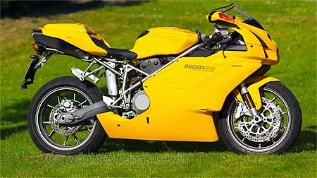

Ducati 999, Yellow
|
After crashing with my R1 in 2002, I had to decide if I should stop driving bikes or not. I decided To buy one last bike. The Ducati 999.
It's expensive, It's good looking, and it's not that fast as the R1. If it
would have been as comfortable as the R1, it would be the bike of my dreams. |